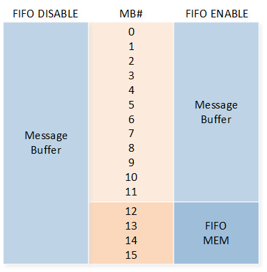
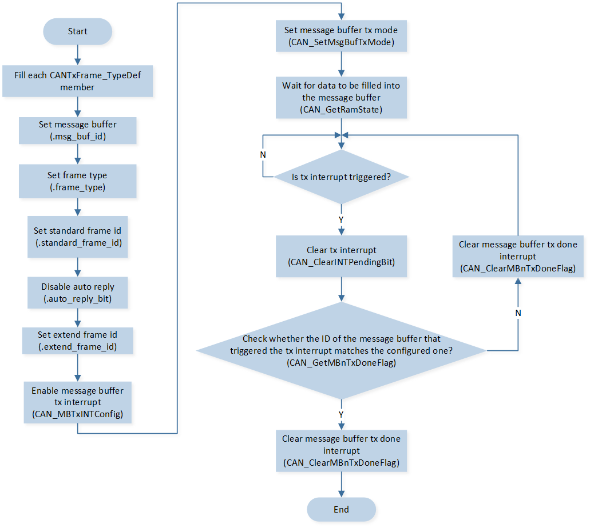
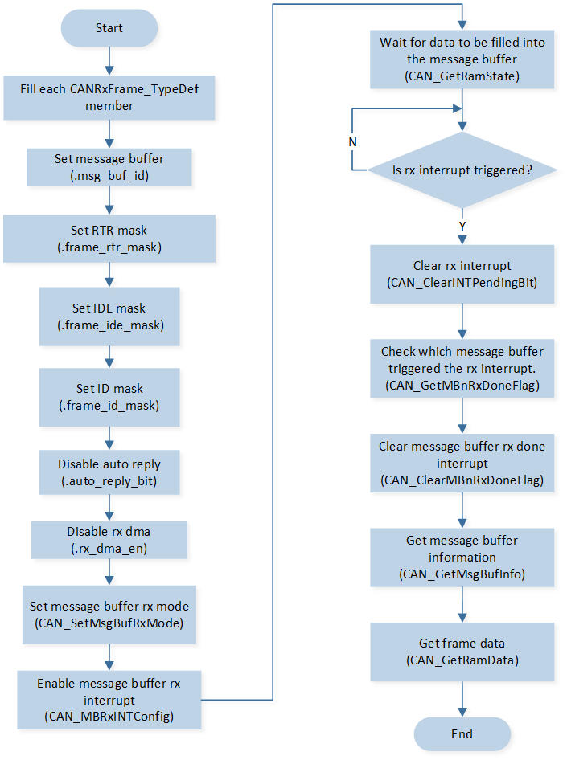
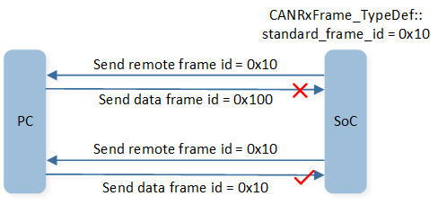
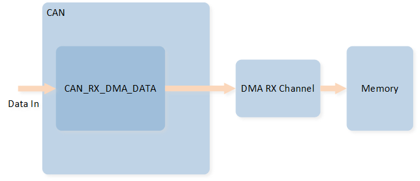

CAN
示例列表
本章介绍 CAN 示例的详细信息。RTL87x2G 为 CAN 外设提供以下示例。
功能概述
CAN 模块针对符合 ISO11898-1-2015 标准和 CAN 2.0 A/B 的 CAN 总线通信。 该模块还包含部分内存逻辑，用于灵活地发送和接收 CAN 消息。 这种逻辑减轻了 CPU 的负担并提高了效率。
特性列表
帧格式
支持标准数据帧、扩展数据帧、标准远程帧和扩展远程帧。 这些帧是来自 ISO11898 的 CAN 帧，详细说明可以在 ISO 标准中找到。
CAN 同步与位时序
CAN 时钟通过分频系统时钟得到，一个周期称为 tq，代表 CAN 控制器操作的最小时间单位。

CAN Clock
在初始化过程中，CAN 时钟可以通过 BRP 来确定，该值定义在 CAN_BIT_TIMING_TYPE_TypeDef::can_brp 中。实际有效的 BRP 是设置值加 1。
CAN 没有时钟线，因此它使用位同步来确保通信的时序，并正确采样总线电平。CAN 的位同步是通过硬同步和重新同步来实现的。
硬同步：硬同步发生在数据帧的起始位置（Start of Frame, SOF），CAN 控制器将其内部时钟调整到与总线同步。
重新同步：重新同步用于在数据帧传输过程中对时钟进行微调，确保持续的时钟同步。如果节点检测到实际边沿与预期边沿之间存在相位误差，重新同步过程将通过设定的相位补偿机制来纠正这种偏差。最大补偿允许值可以通过同步跳跃宽度
CAN_BIT_TIMING_TYPE_TypeDef::can_sjw进行设定，单位为 tq。
为了实现位同步的硬同步方式，CAN 协议定义了位时序的概念。位时序指的是位时间和采样点的配置。 位时间代表一个数据位（1-bit）的时间，由四个周期段组成：同步段（SYNC）、传播时间段（PROP_SEG）、相位段1（PHASE_SEG1）和相位段2（PHASE_SEG2）组成。 CAN 位时序如下：

CAN Bit Timing
SYNC：同步段，位时间的起始部分，用于节点同步，长度固定为 1 tq。
PROP_SEG：传播时间段，用于补偿网络中物理延迟。单位是 tq。
PHASE_SEG1：用于在调整时序时进行补偿。单位是 tq。
Sample Point：采样点，CAN 控制器对数据位采样的具体瞬间，在 PHASE_SEG1 结束的位置。
PHASE_SEG2：在采样点之后，用于进一步调整时序补偿的一个段。单位是 tq。
\(TSEG1 = PROP\_SEG + PHASE\_SEG1\)，可以通过
CAN_BIT_TIMING_TYPE_TypeDef::can_tseg1进行设定，实际有效值是设定值加 1。\(TSEG2 = PHASE\_SEG2\)，可以通过
CAN_BIT_TIMING_TYPE_TypeDef::can_tseg2进行设定，实际有效值是设定值加 1。
备注
\(CAN Speed = 40000000 / ((BRP + 1)*(1 + TSEG1 + 1 + TSEG2 + 1))\).
标准 CAN 中，BRP、TSEG1、SJW 和 TSEG2 的设置范围如下：
Parameter |
Min |
Max |
|---|---|---|
BRP |
0 |
31 |
TSEG1 |
1 |
15 |
TSEG2 |
1 |
7 |
SJW |
1 |
4 |
Message Buffer
CAN 外设支持 16 个 Message Buffer 用于数据的发送和接收。在发送与接收时，需要指定某一个 Message Buffer ID 用于数据的发送或接收。
TX Message Buffer ID 通过 CANTxFrame_TypeDef::msg_buf_id 进行配置，RX Message Buffer ID 通过 CANRxFrame_TypeDef::msg_buf_id 进行配置。
Message Buffer 的 ID 分别为 0 到 15，每个 Message Buffer 的优先级不同。Message Buffer 的优先级仅取决于 Message Buffer ID，不取决于消息内容。 TX Message Buffer 的优先级为编号越小的优先级越高，即 ID 为 0 的 Message Buffer 优先级最高。 RX Message Buffer 的优先级为编号越大的优先级越高，即 ID 为 15 的 Message Buffer 优先级最高。
当启用 RX FIFO 功能时，编号最大的 4 个 Message Buffer 将作为 FIFO。RX FIFO 通过 MB12（Message Buffer ID 12）的配置进行数据的过滤和读取，RX 中断也通过 MB12 的配置生成。FIFO 具有最高的接收优先级。

CAN FIFO
CAN TX
在 CAN 发送帧数据之前，需要定义 CANTxFrame_TypeDef 类型结构体变量，对帧信息进行配置。配置完毕后调用 CAN_SetMsgBufTxMode() 将帧信息和数据写入寄存器并进行数据发送。
若开启发送中断，在中断函数内可以轮询检查每个邮箱的发送状态，找到并清除对应设置邮箱的发送状态标志位。
CAN TX 的流程如图所示：

CAN TX Flow
备注
CAN 一次最多支持发送 8 个字节的数据。
CAN RX
在 CAN 接收帧数据之前，需要定义 CANRxFrame_TypeDef 类型结构体变量，配置接收邮箱 ID，帧信息的过滤条件等。调用 CAN_SetMsgBufRxMode() 将配置信息写入寄存器，调用 CAN_MBRxINTConfig() 开启 RX 接收中断。
当 CAN 接收完毕数据后，会触发接收中断。在接收中断内轮询检查每个邮箱的接收状态，找到并清除对应设置邮箱的接收状态标志位。调用 CAN_GetMsgBufInfo() 获取接收的帧信息，调用 CAN_GetRamData() 获取接收到的数据信息。
CAN RX 的流程如图所示：

CAN RX Flow
若开启 CAN RX FIFO 功能，RX 的数据通过邮箱 ID 12 进行接收。调用 CAN_GetFifoStatus() 判断 FIFO 状态。若 FIFO 不为空，调用 CAN_GetMsgBufInfo() 和 CAN_GetRamData() 获取帧信息和数据信息。
开启 RX FIFO 功能的 CAN RX 流程如图所示：

CAN RX Flow (Enable RX FIFO)
AutoReply
当启用 CAN 的自动回复功能时，CAN 可以在接收到远程帧时自动回复，或者在完成远程帧的传输后自动接收。
RX Remote Frame Auto TX Data Frame
当 Message Buffer 接收到对端发来的远程帧时，CAN 可以自动回复数据帧，此时需要设置 CANTxFrame_TypeDef::auto_reply_bit 为 1，并将准备好的帧信息存放到 Message Buffer 中。
当对端发送的远程帧 ID 与 TX Buffer 中的 Frame ID CANTxFrame_TypeDef::standard_frame_id 匹配时，SoC 会自动回复对应的数据帧。如果远程帧 ID 信息不匹配，SoC 不会回复数据帧。

CAN RX Remote Auto TX Data Frame
TX Remote Frame Auto RX Data Frame
SoC 向对端发送远程帧数据，CAN 可以自动接收对端回复的数据帧，此时需要设置 CANRxFrame_TypeDef::auto_reply_bit 为 1，SoC 会将该数据帧进行接收并存放到对应的 Message Buffer 中。
当对端回复的数据帧 ID 与 RX 设置的 Frame ID CANRxFrame_TypeDef::standard_frame_id 匹配时，SoC 会接收该数据帧。如果数据帧 ID 信息不匹配，SoC 不会对该帧数据进行接收。

CAN TX Remote Auto RX Data Frame
CAN GDMA
CAN 支持 GDMA TX/RX 传输。CAN 仅支持 32-bits 对齐传输，因此在 GDMA 初始化中，需要设置 GDMA_InitTypeDef::GDMA_SourceDataSize 和 GDMA_InitTypeDef::GDMA_DestinationDataSize 为 GDMA_DataSize_Word。
CAN GDMA TX
在 GDMA TX 时，需要设置传输方向为 内存 到 内存 模式，GDMA 无需与 CAN 进行硬件握手。
源端地址为存储数据的 RAM 空间，需要定义 CAN_RAM_TypeDef 类型结构体变量，填入帧信息和数据信息作为 GDMA 搬运的源地址。目的端地址为 CAN 外设中的 RAM Data 地址 CAN->CAN_RAM_DATA。

CAN GDMA TX 示意图
CAN GDMA RX
在 GDMA RX 时，传输方向为 外设 到 内存。
当 CAN 接收到了完整的帧信息时，GDMA 会将数据从 CAN->CAN_RX_DMA_DATA 搬运到用户指定的 RAM 空间。在目的端的 RAM 空间，需要定义 CANRxDmaData_TypeDef 类型结构体变量用于接收 GDMA 搬运的信息。

CAN GDMA RX 示意图
TX Trigger & Time Stamp
在常规模式下，写入 Message Buffer 中的 TX CAN 帧信息会在总线空闲时进行发送。
当开启 TX Trigger 功能后，写入 Message Buffer 中的 TX CAN 帧信息会在 tx_trigger_begin 和 tx_trigger_begin + tx_trigger_close_offset 这个时间段内，且总线空闲时才会进行发送。
开启 TX Trigger 功能的同时，也需要同步开启时间戳功能。
通过在初始化中配置 CAN_TIME_STAMP_TYPE_TypeDef::can_time_stamp_en 以开启时间戳功能，配置 CAN_TIME_STAMP_TYPE_TypeDef::can_time_stamp_div 配置时间戳分频，通过 CAN_GetTimeStampCount() 获取当前时间戳。
通过 CAN_TxTriggerConfig() 配置 tx_trigger_begin 和 tx_trigger_close_offset 的值。

CAN TX Trigger & Time Stamp